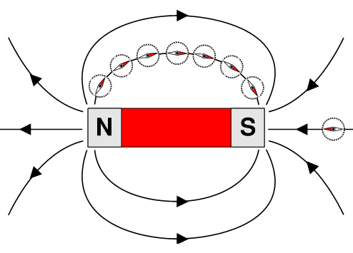
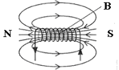
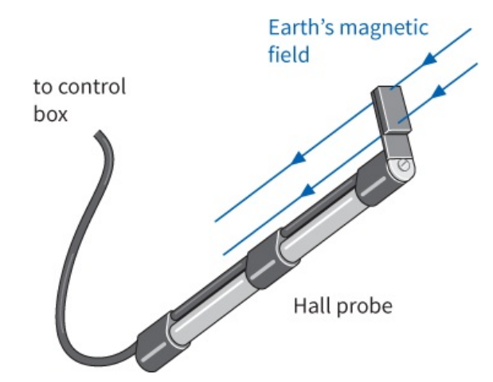
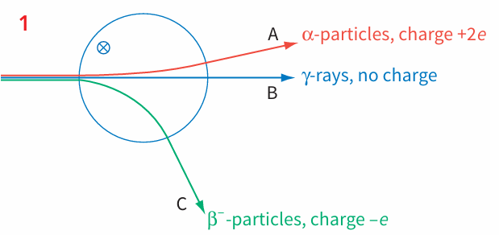
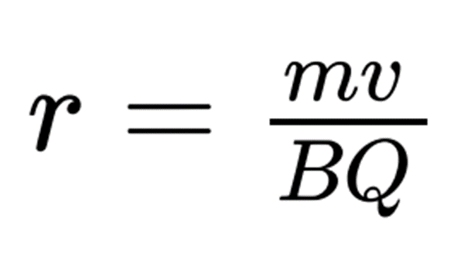
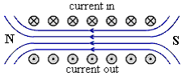
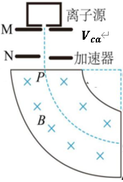
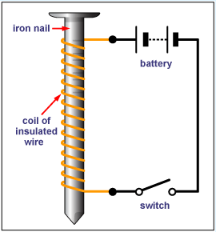
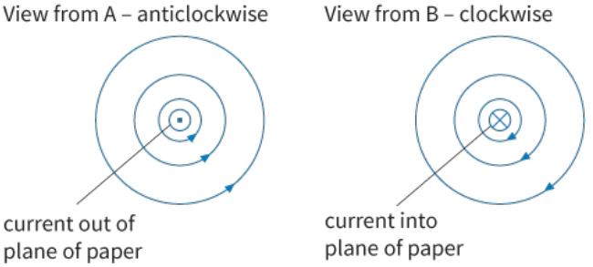
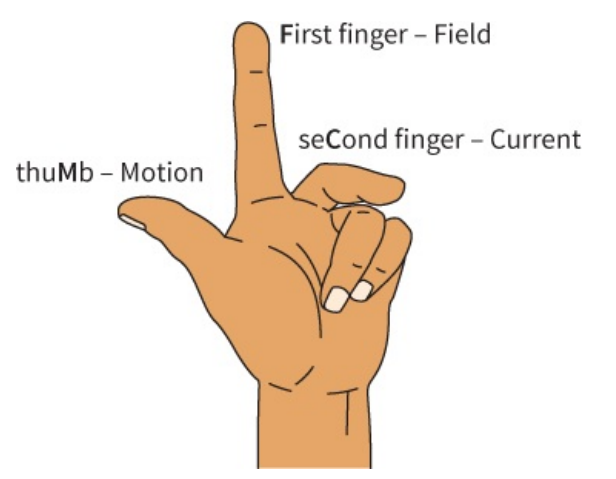

Source: Ex_20.1.2 Ampere's Force 1.pdf
A stiff straight copper wire XY is held fixed in a uniform magnetic field of flux density $2.6 \times 10^{-3}$ T, as shown in Fig.

The wire XY has length 4.7 cm and makes an angle of 34° with the magnetic field.
Calculate the force on the wire due to a constant current of 5.4 A in the wire. [2]
Solution:
Source: Ex_20.1.2 Ampere's Force 1.pdf
(a) Define the tesla. [2]
(b) Two long straight vertical wires X and Y are separated by a distance, as shown in Fig.

(i) Calculate the current in wire X. [2]
(ii) The magnetic flux density B at a distance x from a long straight current-carrying wire is given by the expression $B = \frac{\mu_0 I}{2\pi x}$, where $\mu_0 = 4\pi \times 10^{-7}$ H m⁻¹. Calculate the magnetic flux density at wire Y due to the current in wire X. [2]
(iii) A current of 9.3 A is now switched on in wire Y. Use your answer in (ii) to calculate the force per unit length on wire Y. [2]
(c) The currents in the two wires in (b)(iii) are not equal. Explain whether the force per unit length on the two wires will be the same, or different. [2]
(a) [2 marks]
(b)(i) [2 marks]
(b)(ii) [2 marks]
(b)(iii) [2 marks]
(c) [2 marks]
Source: Ex_20.1.3 Ampere's Force 2.pdf
Two long straight parallel wires P and Q carry currents into the plane of the paper, as shown in Fig.
The current in P is I and the current in Q is 2I.
(a) On Fig., draw an arrow to show the direction of the magnetic field at wire Q due to the current in wire P. Label this arrow B. [1]
(b) On Fig., draw another arrow to show the direction of the force acting on wire Q due to the current in wire P. Label this arrow F. [1]
(c) State, with a reason, how the magnitude of the force acting on wire P compares with the magnitude of the force acting on wire Q. [1]
(a) [1 mark]
(b) [1 mark]
(c) [1 mark]
Source: Ex_20.2.1 Lorentz Force 1.pdf
An electron is moving at $1.0 \times 10^6$ m s⁻¹ in a uniform magnetic field of flux density 0.50 T, as shown in Fig.

Calculate the force on the electron when it is moving:
(a) at right angles to the field [2]
(b) at an angle of 45° to the field. [2]
e = 1.60 × 10⁻¹⁹ C
(a) [2 marks]
(b) [2 marks]
Source: Ex_20.2.1 Lorentz Force 1.pdf
A beam of electrons is produced by an 'electron gun', and magnets are used to apply a magnetic field as shown in Fig.
A beam of electrons is deflected as it crosses a magnetic field.
Explain why the electron beam is deflected in a curved path rather than a straight line. [3]
Solution: [3 marks]
Source: Ex_20.2.1 Lorentz Force 1.pdf
An electron is travelling at right angles to a uniform magnetic field of flux density 1.2 mT, as shown in Fig.

The speed of the electron is $8.0 \times 10^6$ m s⁻¹. Calculate the radius of the circle described by this electron. [6]
e = 1.60 × 10⁻¹⁹ C and mₑ = 9.11 × 10⁻³¹ kg
Solution: [6 marks]
Source: Ex_20.2.2 Lorentz Force 2.pdf
A velocity selector is used to select ions of a specific speed, as shown in Fig.
(a) State the directions of the magnetic and electric forces on a positively charged ion travelling towards the slit S. [1]
(b) Calculate the speed of an ion emerging from the slit S when the magnetic flux density is 0.30 T and the electric field strength is $1.5 \times 10^3$ V m⁻¹. [2]
(c) Explain why ions travelling with a speed greater than your answer to (b) will not emerge from the slit. [2]
(a) [1 mark]
(b) [2 marks]
(c) [2 marks]
Source: Ex_20.2.2 Lorentz Force 2.pdf
A Hall probe is designed to operate with a steady current of 0.020 A in a semiconductor slice of thickness 0.05 mm, as shown in Fig.

The number density of charge carriers (electrons) in the semiconductor is $1.5 \times 10^{23}$ m⁻³.
(astrong> (a) Calculate the Hall voltage that will result when the probe is placed at right angles to a magnetic field of flux density 0.10 T. [4]
(b) Explain why the current in the Hall probe must be maintained at a constant value. [2]
(a) [4 marks]
(b) [2 marks]
Source: Ex_20.3.1 Electromagnetic induction.pdf
When an aircraft flies from east to west, its wings are an electrical conductor cutting across the Earth's magnetic flux. In the northern hemisphere, state which wingtip (left or right) will become positive. State and explain what will happen to this wingtip in the southern hemisphere. [4]
Solution: [4 marks]
Source: Ex_20.3.2 Lenz's law.pdf
A small solenoid of area of cross section $1.6 \times 10^{-3}$ m² is placed inside a larger solenoid of area of cross-section $6.4 \times 10^{-3}$ m², as shown in Fig.

The larger solenoid has 600 turns and is attached to a d.c. power supply to create a magnetic field. The smaller solenoid has 3000 turns.
(a) Compare the magnetic flux in the two solenoids. [1]
(b) Compare the magnetic flux linkage in the two solenoids. [1]
(c) The current in the large solenoid is reduced uniformly to zero in a time of 0.50 s. Calculate the average e.m.f. induced in the small solenoid. [3]
(a) [1 mark]
(b) [1 mark]
(c) [3 marks]
Source: Ex_20.3.3 Faraday's law and applications.pdf
A large horseshoe magnet has a uniform magnetic field between its poles. The magnetic field is zero outside the space between the poles.
A small Hall probe is moved at constant speed along a line XY that is midway between, and parallel to, the faces of the poles of the magnet, as shown in Fig.

An e.m.f. is produced by the Hall probe when it is in the magnetic field.
On the axes of Fig. 5.2, sketch a graph to show the variation with time t of the e.m.f. induced in the probe as it moves at constant speed from X to Y. [2]
Solution: [2 marks]
Source: Ex_20.3.3 Faraday's law and applications.pdf
A transformer is used to change 240 V alternating voltage to 6.0 V, as shown in Fig.

(a) The primary coil has 2000 turns. Calculate the number of turns on the secondary coil. [2]
(b) The current in the secondary coil is 2.0 A. Assuming an ideal transformer, calculate the current in the primary coil. [2]
(c) State one way in which a real transformer differs from an ideal transformer. [2]
(a) [2 marks]
(b) [2 marks]
(c) [2 marks]
Source: Ex_20.3.4 Revision.pdf
A rectangular coil ABCD is rotated in a uniform magnetic field, as shown in Fig.

The coil has 80 turns and each turn has an area of $4.0 \times 10^{-3}$ m². The coil is rotated at 4.0 revolutions per second in a uniform magnetic field of flux density 0.25 T.
(a) Calculate the maximum e.m.f. induced in the coil. [3]
(b) State the position of the coil when the e.m.f. has its maximum value. [2]
(c) The coil is now rotated at 8.0 revolutions per second. State the new maximum e.m.f. [1]
(a) [3 marks]
(b) [2 marks]
(c) [1 mark]
Source: Ex_20.3.4 Revision.pdf
A coil of insulated wire is wound on to a soft-iron core. The magnetic flux density B in the core is varied with current I, as shown in Fig.

Use the graph to determine:
(a) The magnetic flux linkage of the coil when I = 2.0 A. [2]
(b) The e.m.f. induced in the coil when the current decreases uniformly from 2.0 A to 0 in a time of 0.10 s. [4]
(a) [2 marks]
(b) [4 marks]